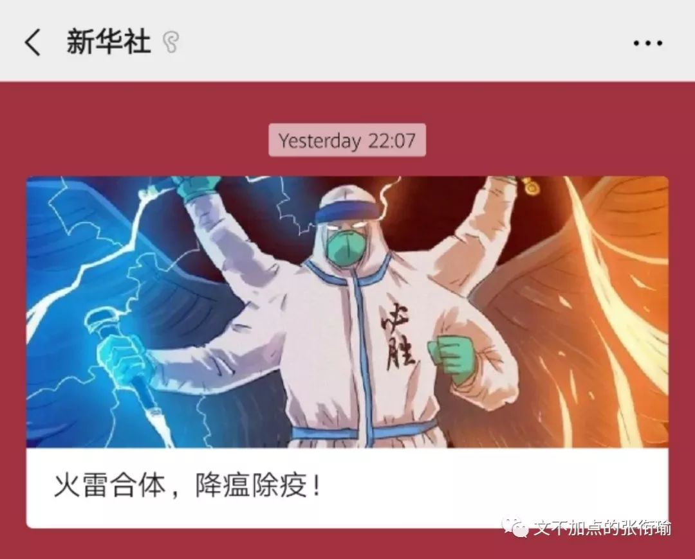
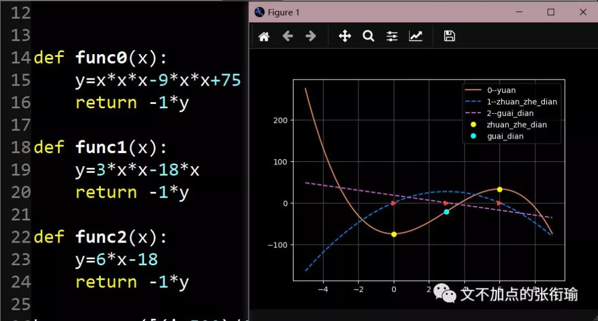

标题应该加上引号，因为我并没有资格来“阅卷”，这也不是一张考卷。不能阅卷是源自于舆论传播知识的匮乏，但这确实是在情绪和信息的洪流下，所有人不同反应的一次集中展现。我只是从人本和逻辑出发，又开始发觉不对的东西。
四零年代的报纸、五零年代的评论。索尔仁尼琴、罗曼罗兰、鲁迅。一个人在公众社交媒体上多年以前的发言，在最近接受采访时候的答记者问。昨晚的两轮消息。这些都是真实存在的事件碎片。
我没有质疑这些事件发生的真实性，同样也对具有思想光辉的语言抱有敬意。我所怀疑的是，在组织这些材料的每一个人，是不是真的知道自己在说的是什么内容、是不是知道自己这么组织材料时遵循的是什么逻辑。因为根据我的观察，一部分人所组织的材料，在他们本人是得不到这一项情绪结论的。全石以为底，近岸，卷石底以出。当情绪的洪流轰击过所有的这些石头，我疑惑自己所看到的是不是一篇又一篇的命题作文。
像绝大部分中学生写议论文时都有过的，在认为文章格调不够的时候，把自己的材料和一句格言警句串在一起。只要有了一句名言，稍微能沾边和搭上来，那么格言的内涵势必能照拂到自己后文中论述材料的每一个思想的边边角角。现在倒也好，一部分人在大众传播的媒体上传播着自己信任的事实讯息，还有一些人则进行着格言警句的摘抄。我没有说一部分和另一部分，因为这之中有交叠。
致哀的Rest in Peace，和要去别人的葬礼上发表一番演讲，这是不同的概念。打字作文的时候，每逢句子结尾必用感叹号的人，自然也和用句号、省略号结尾的人有了差异。
我向来鲜明地不喜欢在面对现实事实议题的时候，用夸张做作的表达方式。上一篇推文里讲标语是其中一个例子，以下的这两张截图就是另外两个例子：


在人们要就事论事讨论问题的时候，反过去环顾左右而言他。在人们都在谈笑欢乐明知道大家都在瞎扯淡的时候，却跑过来说你们给我正经一点。这和“休息日办公、办公日休息”如出一辙，做着努力办公的假模假样。如上，说得不好听是在消费IP。
真正在按照自己的情绪去博爱众生的人，会致哀并扼腕叹息每一个生命的逝去；在按照怀疑一切的阴谋论前进的人，应该要去检查一下在护理过程中有没有故意的缺漏。虽然说是检查，但并不会跳出医学常识之外，也并不会局限在将要脏器衰竭之后的这段时间；在真正思考当今舆论生态的人，不是要求其他人都按照命题作文的标准答案去写作文，而是思考怎么让每个人思考自己的生活、从而成就生活的哲学和文学而不仅仅是阅卷场。
当我们开始千人一面地出现情绪洪流下，找出一模一样的旧报纸、大象、鲁迅，那不仅仅是在自己语境下对这些词句有了更难人人互通的自我解构，还会更难在将来的思考中脱离这一些句子而想出自己的东西。这种难以脱离，和逃脱不出恐怖震惊的叙事语言，是较大维度上同一类的思维陷阱。
艺术家是在原本正常的事物中找不正常。但如若生活更加反正常，则生活的某一部分势必已经在规律外游离。当正常普通的事实说明变成了一件值得大家去缅怀的事情，一种可能是人们真情实意地对自己生活的语言环境表示憎恶，另一种可能则是刻奇。两者并不互斥，也不代表没有其他可能。只是刻奇格外令人警醒，因为站队从众就很多是这么来的。
当初在谣言推文底下评“大快人心，必须严惩”，和今早报道中“英雄，一路走好”，是不是同一批人呢？我不认为有一条消息出来了之后，后续经过公信媒体出来然后只发一条辟谣有什么好处。从我接收信息的舆论传播来看，最近两者经常限于同一语言模式——一个人煞有介事地说、另一个人也煞有介事地说。只是凭更信任后者，而信任这一辟谣，但这并不是思维和逻辑的胜利，而是在透支自己的信用资本。
至于信用本身，也是一件奇怪的事情。目前除了最大的公信平台之外，我能看到并且相信、而且是用逻辑来相信的，似乎只有丁香医生一类以自己清晰可闻的专业技术来答疑解惑的这么一个组织。我们大可以把这和对于理工农医的推崇归到一类，但这自然也不是什么人文社科的胜利。高估自己处理信息的能力，和高估“完全自由”的收益，一样有害。以及神奇的大张旗鼓宣传唱歌，以歌声咏喻自己的情怀。恕某不能理解这有什么好大肆宣传。如果不是自己在家解闷，那就更令人怀疑宣传手法上的人是不是真的和普通人生活在同一个世界，是不是在对这个世界的人说话。
顺便说，公众传媒里“拐点”和“转折点”是两个完全不同的概念。从数学上来说，一个得看一阶导数、一个得看二阶导数。且不去讨论这样离散的状态下是否领域内真的连续可导，假装被证明了各种品优。也许经济版调来写作的人知道怎么回事，那也要想学过高数能理解的有多少呢？

最近总在各处看到的“一将无能累垮三军”。表达类似含义的人，大抵许多年的教育也都打了水漂。我们少了文盲，但并没有少科盲——自然科学和社会科学都是。越是强调个人，则反面集体社会的结构也就可想而知；越是弘扬小部分人的牺牲、冲锋陷阵，越是对懦弱羊群的讽刺。当代的律政没说一定要一位包青天大人才能秉公断案，这就是先辈斗争的胜利果实。
中学语文老师曾经批评过我“砌诗墙”，那时候的文章就像是“西风多少恨，吹不散眉弯。在辛苦最怜天上月的日子里，一夕成圆，夕夕都成玦。所以，谁念西风独自凉，当真纳兰容若之后再无词人。”其实自己知道什么都没写。
大学在听阎连科讲座的时候，学生提问说怎么看待当今新媒体时代下，杂文的失语没落？阎连科说这本应该是最适合杂文野蛮生长的时代，但是我们看不到这样的杂文大家出现。
一边是正直勇敢的普通人离开了，一边是童真地勒碑立传。我并无意于成为杂文作者，也没有想过自己的文章真正会影响到谁，这只是提醒自己的日记随笔。希望我明天也要知道自己说的是什么，负责自己的逻辑链。查找一下大学写的第一篇“限韩令”社评，以及后来关于“刘国梁卸任国乒主教练又复职”等三件事、直到最近医生群体不同方面和层次的好几件事。舆论场的林林总总并不新鲜。